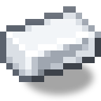

Анемометр
alaindustrial:wind_gauge
Зведення
Анемометр — ручний прилад без енергії. Він не будується й нічого не виробляє: він показує швидкість вітру в тій точці, де ви стоїте, — щоб вежу під вітряк обрати до будівництва, а не розбирати й переставляти її по три рази.
Прилад не дає порад. Жодних «підніміться вище», «тут оптимально» чи «до стелі N блоків». Він показує вимірювання — висновок робить гравець.
Як користуватися
Shift + ПКМ з приладом у руці — у повітрі або по будь-якому блоку, різниці немає. В action bar з'являється рядок, і прилад коротко дзвенить:
Висота Y 118 · Вітер 47.8 км/год · Ясно · Небо: відкритеТон дзвінка росте разом із показанням, тому посилення вітру чутно раніше, ніж прочитано рядок.
Скільки вітру на висоті
Вітер росте з висотою, найсильніший біля кромки хмар, а вище хмар повітря розріджене й вітер стихає.
| Висота (рівень моря 63) | Ясно | Дощ | Гроза |
|---|---|---|---|
| Y 63 і нижче | 0.0 | 0.0 | 0.0 |
| Y 85 | 12.6 | 18.9 | 25.3 |
| Y 100 | 18.6 | 28.0 | 37.3 |
| Y 127 | 28.1 | 42.2 | 56.3 |
| Y 160 | 39.7 | 59.6 | 79.5 |
| Y 175 | 49.3 | 73.9 | 98.6 |
| Y 185 | 56.8 | 85.2 | 113.5 |
| Y 192 (хмари) | 62.5 | 93.8 | 125.0 |
| Y 198 | 47.1 | 70.7 | 94.2 |
| Y 210 | 32.8 | 49.1 | 65.5 |
| Y 230 | 15.9 | 23.9 | 31.9 |
| Y 248 і вище | 3.8 | 5.6 | 7.5 |
Погода множить швидкість: ясно ×1, дощ ×1.5, гроза ×2. Значення беруться з тих самих полів налаштувань, що й виробіток вітряків, тому розійтися з генерацією показання не можуть.
Профіль висоти
Крива одна на весь мод — за нею і прилад рахує км/год, і вітряки рахують EU/FE/т. Чотири ділянки:
- Штиль — на рівні моря й нижче вітру немає.
- Розгін — від рівня моря до «гребеня» гілки: швидкий підйом, що поступово сповільнюється, до
45 % повної сили.
- Плече — від гребеня до хмар (Y 192): прискорюваний добір решти 55 %. Прискорення тут і
робить пік вузьким: на лінійному плечі вітряк видавав максимум на 67 висотах поспіль.
- Розрідження — від хмар до Y 248: обвал до 6 % повної сили, найрізкіший одразу над хмарами.
Вище лишається тільки слід вітру: прилад його показує (3.8 км/год), але для вітряка це нуль.
Практичний наслідок: найвітряніше місце у світі — вузька смуга прямо під хмарами. Повний виробіток вітряк видає лише на кількох висотах: T1 — Y 183–193 (11 блоків), небесний млин — Y 188–192 (5), штормовий — Y 189–192 (4). Ні «вище», ні «під саму стелю світу» не працює: вежа на Y 230 слабша за вежу на Y 127.
Небо і світ
Закрите небо ⇒ 0.0 км/год, якою б не була висота й погода. Прилад перевіряє небо так само строго, як вітряк: стовп над точкою має бути повністю прозорим. Листя й павутина вважаються закритим небом — вітряк під ними мертвий, на відміну від сонячної панелі, яка під листям лише втрачає частину виробітку.
У Нижньому світі й Краї прилад не показує число, а пише, що вітру тут немає: вітряки там не працюють, і будь-яке число було б вигадкою.
Еталон шкали
Розгінна ділянка задається гребенем гілки, тому прилад обирає один еталон — базовий вітряк T1: перший, що будує гравець, і єдиний, який існує на момент, коли прилад доступний за крафтом. Вище гребеня плече й розрідження в усіх гілок спільні, тож еталон впливає лише на форму розгону, але не на те, де вітер досягає максимуму й де вмирає.
У небесного млина гребінь збігається з T1: 8 ступенів по 8 блоків — ті самі +64, що й 4 по 16. Ці дві гілки відрізняються не висотою, а базою під хмарами (8 проти 4) і погодними множниками. Своїм гребенем володіє лише штормовий (+96), і для нього розгін розтягнутий — але пік і смерть вітру спільні.
Рецепт
Дві палиці, скляна панель, два олов'яні зливки й дві дерев'яні шестерні. Без енергії та без схем — простий дерев'яний прилад, який робиться задовго до першого вітряка.
Пов'язане
Вітрогенератор — гілка T1, за якою відшкальовано прилад. Небесний млин — T2, той самий гребінь, удвічі більша база. Штормовий млин — T2, гребінь вищий.
Крафт
Крафт на верстаку

▶
Анемометр